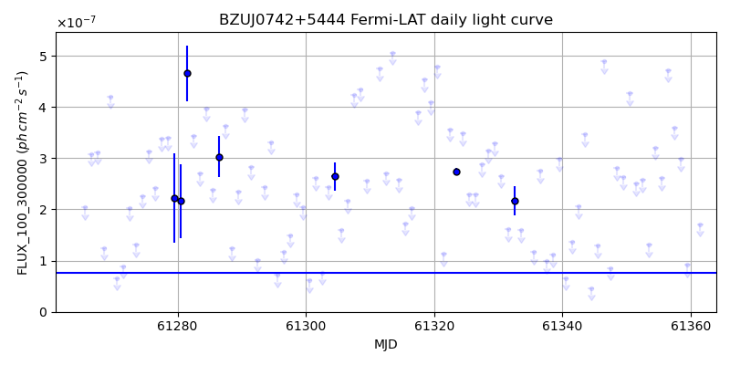
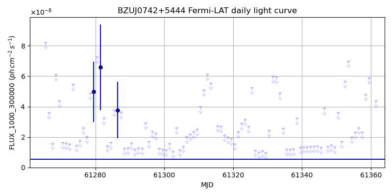
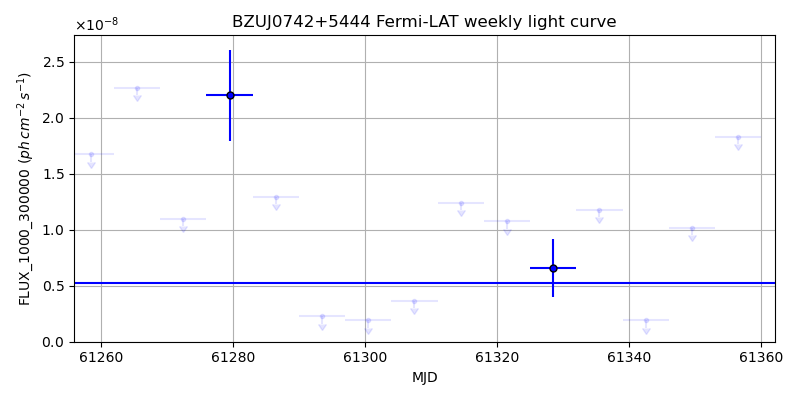

LAT Lightcurve site: https://fermi.gsfc.nasa.gov/ssc/data/access/lat/msl_lc/source/BZU_J0742p5444
NED: Query
Time of last update of this page: UT: 2026-11-20 16:19 (MJD: 61364.680)
| Property | Value |
|---|---|
| R.A. | 7:42:39.84 |
| Dec. | 54:44:24.0 |
| z | 0.720 |
| 3FGL SpectrumType | LogParabola |
| 3FGL PL Index | |
| 3FGL Flux_100_300000 | 7.70e-08 1 / (s cm2) |
| 3FGL Flux_1000_300000 | 5.28e-09 1 / (s cm2) |
| 3FGL Flux >200 GeV | 2.84e-12 1 / (s cm2) |
| 3FGL Extrap. Crab >200 GeV | 0.01 |
| 3FGL Flux After EBL Absorption >200GeV | 1.78e-13 1 / (s cm2) |
| 3FGL EBL Crab Fraction >200GeV | 0.00 |

| MJD | dMJD | Flux | dFlux | Frac3FGL | FracCrab>200GeV | EBLFracCrab>200GeV |
|---|---|---|---|---|---|---|
| 61357.50 | 0.50 | 3.60e-07 | 0.00e+00 | 0.00 | 0.00 | 0.00 |
| 61358.50 | 0.50 | 2.99e-07 | 0.00e+00 | 0.00 | 0.00 | 0.00 |
| 61359.50 | 0.50 | 9.18e-08 | 0.00e+00 | 0.00 | 0.00 | 0.00 |
| 61360.50 | 0.50 | 1.39e-06 | 0.00e+00 | 0.00 | 0.00 | 0.00 |
| 61361.50 | 0.50 | 1.71e-07 | 0.00e+00 | 0.00 | 0.00 | 0.00 |
| MJD | dMJD | Flux | dFlux | Frac3FGL | FracCrab>200GeV | EBLFracCrab>200GeV |
|---|---|---|---|---|---|---|
| 61328.50 | 3.50 | 1.23e-07 | 2.67e-08 | 1.60 | 0.02 | 0.00 |
| 61335.50 | 3.50 | 9.42e-08 | 2.02e-09 | 1.22 | 0.01 | 0.00 |
| 61342.50 | 3.50 | 8.93e-08 | 0.00e+00 | 0.00 | 0.00 | 0.00 |
| 61349.50 | 3.50 | 1.11e-07 | 3.06e-09 | 1.44 | 0.02 | 0.00 |
| 61356.50 | 3.50 | 1.52e-07 | 0.00e+00 | 0.00 | 0.00 | 0.00 |

| MJD | dMJD | Flux | dFlux | Frac3FGL | FracCrab>200GeV | EBLFracCrab>200GeV |
|---|---|---|---|---|---|---|
| 61357.50 | 0.50 | 2.31e-08 | 0.00e+00 | 0.00 | 0.00 | 0.00 |
| 61358.50 | 0.50 | 4.80e-08 | 0.00e+00 | 0.00 | 0.00 | 0.00 |
| 61359.50 | 0.50 | 5.90e-08 | 0.00e+00 | 0.00 | 0.00 | 0.00 |
| 61360.50 | 0.50 | 3.78e-07 | 0.00e+00 | 0.00 | 0.00 | 0.00 |
| 61361.50 | 0.50 | 4.36e-08 | 0.00e+00 | 0.00 | 0.00 | 0.00 |

| MJD | dMJD | Flux | dFlux | Frac3FGL | FracCrab>200GeV | EBLFracCrab>200GeV |
|---|---|---|---|---|---|---|
| 61328.50 | 3.50 | 6.59e-09 | 2.57e-09 | 1.25 | 0.02 | 0.00 |
| 61335.50 | 3.50 | 1.18e-08 | 0.00e+00 | 0.00 | 0.00 | 0.00 |
| 61342.50 | 3.50 | 1.90e-09 | 0.00e+00 | 0.00 | 0.00 | 0.00 |
| 61349.50 | 3.50 | 1.02e-08 | 0.00e+00 | 0.00 | 0.00 | 0.00 |
| 61356.50 | 3.50 | 1.83e-08 | 0.00e+00 | 0.00 | 0.00 | 0.00 |
--------------------------------------------------------- Using user-supplied coords: 7:42:39.84 54:44:24.0 2000 --------------------------------------------------------- FLWO UT night of: 2026-11-21 Local Sid. @ Midnight: 03:37 Sunset (-15.0) (local, UT): 18:33 01:33 Sunrise (-15.0) (local, UT): 05:47 12:47 Moonrise (local, UT): Moonset (local, UT): 03:40 10:40 Moon phase: 0.85 --------------------------------------------------------- AzTime LSID UT Obj_el Obj_az Mn_el Mn_az Sep. --------------------------------------------------------- 18:33 22:09 01:33 2.0 19.9 47.9 117.4 93.7 19:03 22:39 02:03 4.3 23.6 53.3 125.0 93.5 19:33 23:09 02:33 7.0 27.0 58.2 134.7 93.3 20:03 23:39 03:03 10.0 30.1 62.3 146.9 93.1 20:33 00:09 03:33 13.3 32.9 65.1 162.1 92.9 21:03 00:39 04:03 16.9 35.4 66.3 179.7 92.7 21:33 01:09 04:33 20.7 37.6 65.4 197.5 92.5 22:03 01:39 05:03 24.7 39.5 62.9 213.2 92.3 22:33 02:09 05:33 28.8 41.0 59.0 225.9 92.2 23:03 02:39 06:03 33.1 42.1 54.2 235.9 92.0 23:33 03:09 06:33 37.4 42.7 48.9 243.9 91.8 00:03 03:39 07:03 41.7 42.8 43.2 250.4 91.6 00:33 04:10 07:33 46.1 42.2 37.3 255.9 91.4 01:03 04:40 08:03 50.3 40.8 31.2 260.7 91.2 01:33 05:10 08:33 54.4 38.3 25.1 265.1 91.0 02:03 05:40 09:03 58.2 34.5 19.0 269.2 90.7 02:33 06:10 09:33 61.6 29.1 12.9 273.0 90.5 03:03 06:40 10:03 64.3 21.7 6.8 276.9 90.3 03:33 07:10 10:33 66.2 12.3 1.0 280.7 90.1 04:03 07:40 11:03 67.0 1.6 -4.9 284.7 89.8 04:33 08:10 11:33 66.6 350.6 -11.1 288.8 89.6 05:03 08:40 12:03 65.0 340.7 -16.8 293.2 89.3 05:33 09:10 12:33 62.4 332.8 -22.3 298.1 89.0 05:47 09:25 12:47 60.9 329.7 -24.8 300.5 88.9 --------------------------------------------------------- Dark hours >55 deg.: 2.11 srcstart (UT): 2026-11-21 10:40 srcend (UT): 2026-11-21 12:46